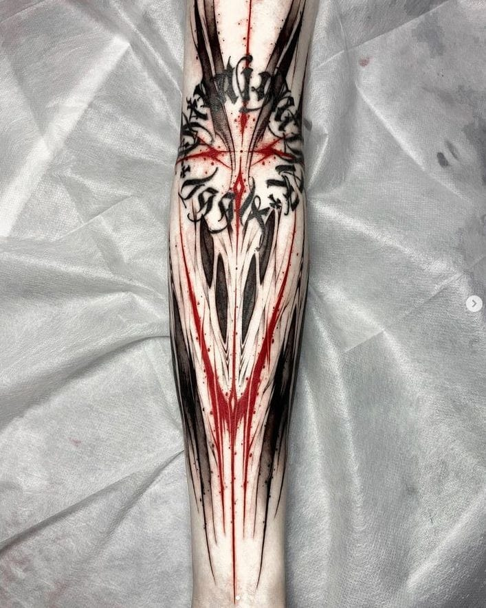
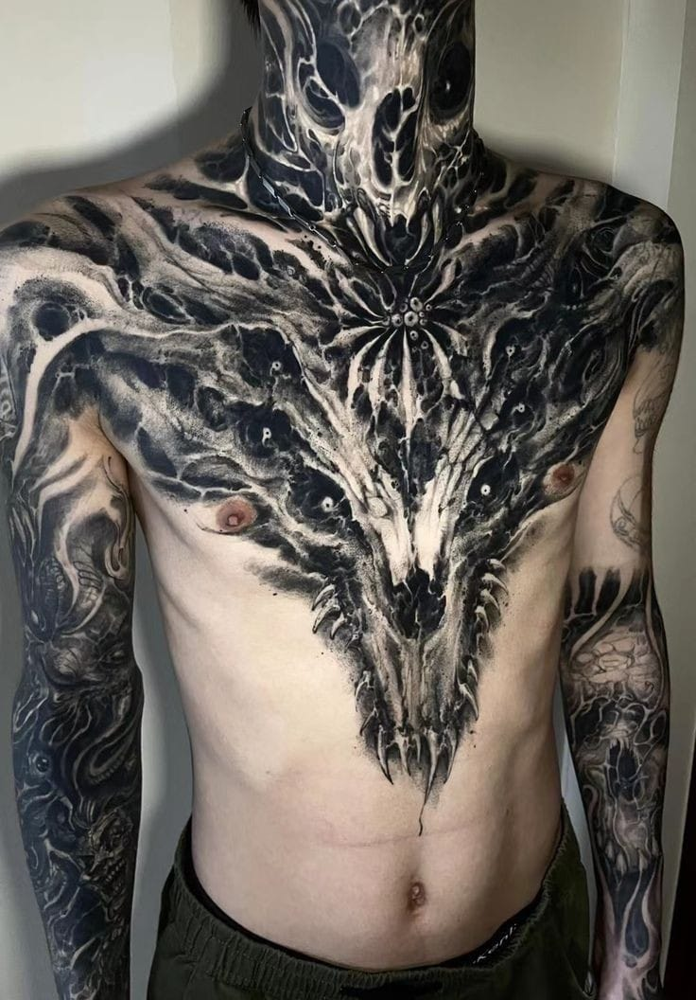
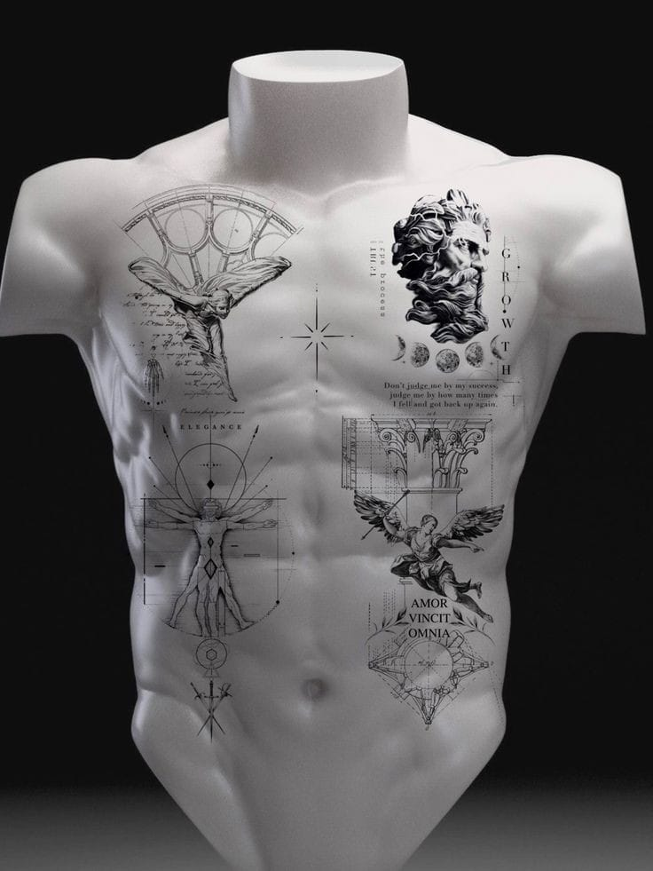

Estilos de tatuaje
Existen muchos tipos de tatuajes, pero dentro de nuestra especialidad encontrarás los siguientes.

Realista
Los tatuajes realistas tratan de plasmar en la piel una imagen de la forma más real posible,
como si de un cuadro de pintura se tratase. Los tatuadores tienen que tener la habilidad para
hacer que el tatuaje parezca una fotografía. Este estilo es uno de los más tatuados, y se puede
hacer a color o en blanco y negro. Para que tenga el máximo nivel de detalle se utilizan agujas
finas.

Tribales
Relacionamos los tatuajes tribales fácilmente con uno de los estilos más tatuados en los 80, los
90 e incluso a principios de los 2000, con diseños bastante básicos o sencillos y no siempre con
un significado claro o referente a las tribus. Su origen es muy antiguo y procede de varias
culturas como, por ejemplo, la celta, la maorí y la polinesia, ya que se trata de tatuajes
originados en las tribus de varias zonas del mundo y de distintas épocas.

Blackout
Como indica su nombre, se caracterizan por estar realizados por completo en tinta negra. El
estilo blackwork se define sencillamente por tratarse de diseños, que pueden ser figuras más o
menos grandes, que solo usan tinta negra, con más o menos cantidad de sombreado.
Además, cuando este estilo va más allá, nos encontramos con el blackout se basa en rellenos
completos en tinta negra, dejando que la forma del dibujo o de la forma creada acabe siendo la
zona de la piel que ha quedado sin tatuar. A menudo los dibujos son de estilo neotribal o
geométricas, simplemente consistentes en cubrir una parte del cuerpo. Es por esto que, en
ocasiones, este estilo se utiliza como técnica de relleno para unir tatuajes.
Información